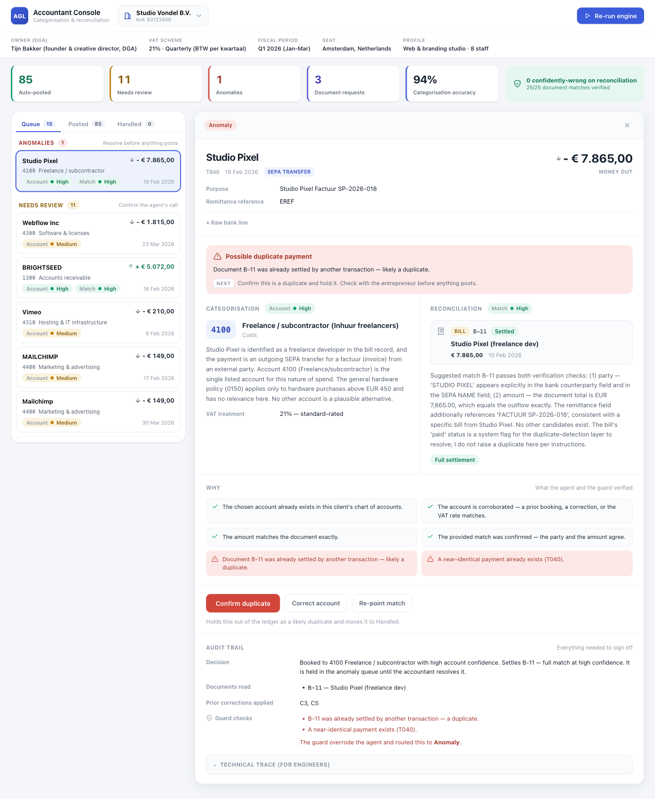

Every bank line becomes a ledger entry — the agent posts what it can prove, and defers the rest.
One structured model call per transaction, grounded by code and re-checked by a strict guard that can only downgrade — never rewrite. The accountant sees a ranked queue of just what needs them, and one correction teaches every similar line.
85/100auto-posted, untouched
0.95categorisation accuracy
25/25reconciliations correct
never confidently wrong where provable0 on reconciliation & material entries — 1 immaterial miss
Studio Vondel B.V. · 100 Q1 2026 bank lines · live Claude model (Sonnet 4.6) · real eval01
The shape of the system · one pass per line
Code gathers the facts; the model judges; code re-checks and routes. The accountant sees only the lines worth their time.
ground — code gathers the facts. decide — one model call makes the judgement. guard — a code re-check that can only downgrade, never rewrite. gate — the bar a line must clear to auto-post: both confidences high and a clean guard. route — sends each line to one of four places: auto-post, review, anomaly, or request-document.
One agent interface, swappable backends — pydantic-ai (Sonnet 4.6 / Gemini 2.5 Pro) · claude -p committed-eval path · test stub02
How the agent decides · one call, four judgements
One model call per line makes every judgement — the agent decides, the code never does.
No tools, no back-and-forth: code lays out the verifiable facts and the model judges the line in one pass — at temperature zero, the lowest-randomness setting, so the same line always gives the same answer.
1
Which account. The one chart entry the line belongs to — read from the description and counterparty, not a vendor lookup.
2
Does it settle an open invoice or bill — verifying the provided match by payer and amount rather than trusting it.
3
Is it anomalous — a duplicate payment, a miscategorisation, or a missing counterpart.
4
How confident, so post or defer — and if a material document is missing, request it from the entrepreneur.
Two confidences — account and match — rated independently, never one blended number. Auto-post needs both high and a clean guard and a corroborating fact: the vendor recurs three or more times, a correction pins it, vendor history or the settling bill agrees, or the realised VAT rate matches the account treatment.
agent.decide → typed Proposal(account · match · anomaly · two confidences · a reason each)03
Categorisation · where it is actually hard
The same vendor is two accounts. A salary-shaped line is a freelancer. A laptop is an asset; a monitor isn't.
Reading the codes: these are a Dutch chart of accounts; the first digit is the rubriek (account class) — 0xxx balance sheet & equity · 1xxx receivables, payables & VAT · 4xxx costs · 8xxx revenue.
GOOGLE *GSUITE / *ADST005 · T068
4300 → 4400
Same vendor root; the product token decides — software vs marketing. Naive vendor-mapping books both to one account.
J. de Vries — SEPA "factuur"T043 · −€2.904
4100, not 4000
A personal-name, salary-shaped line — but de Vries isn't one of the six payrolled staff and carries a freelance invoice. Inhuur (freelance hire), not brutoloon (gross salary).
MacBook Pro / Dell monitorT033 · T075
0150 vs 4500
€2.200 net capitalises and depreciates; €380 is expensed at once. One ~€450 threshold, applied in both directions.
T. Bakker — round transferT016 · T079
0600
Off-cycle, round, no description: an owner's draw (privé-opname), not an expense — and distinct from his salaris (salary) on the 25th.
Centraal Beheer / NS BusinessT002 · T047
4700 · 4600 @ 9%
Insurance carries no reclaimable BTW (the Dutch VAT) — nothing to deduct; rail travel is taxed at 9%, not 21%. The VAT rate is part of the decision, not an afterthought.
Each is a rule the agent applies and the guard re-checks. A correction teaches it once — keyed to the cleaned vendor, not the raw bank string — and it lands on every sibling, not just the line you fixed.
Project AGL — Challenge 2categorisation
Reconciliation · verify, don't trust
The feed's matches arrive ~96% right — the agent confirms each, never trusts it.
That ~96% counts all 100 lines, most of which correctly have no document. On the 26 lines where the feed actually claims a match, only 22 are right (~85%) — one in seven wrong. That is why every suggestion is re-checked on payer and amount before it can post.
INV-004 (Voss & Partners) and INV-005 (Lumen Retail) are both €7.260, so the amount is useless — the counterparty on the line resolves it.
The duplicateT046 · €7.865 → Studio Pixel
ANOMALY
A second identical payment against an already-paid bill. It looks like a perfect match by amount and vendor — so it is flagged, not booked.
One payment, two documentsT076 · €3.375,90
INV-006 + INV-007
€2.165,90 + €1.210,00 sums exactly. The agent splits the settlement across both, not one of them.
The €10 short-payT045 vs INV-002
match · FLAG
Right counterparty and reference, €10 under the invoice. Matched, but the gap is flagged for review — never silently closed.
The VAT-integrity trap. An inflow that settles an invoice the studio already issued books to 1300 Debiteuren (receivables), never 8000 Omzet (revenue) — to revenue would count the same turnover and its output BTW (VAT) twice, so a guard check blocks it. Net: a ~96% feed becomes 0.99 across all 100 lines and a clean 25 of 25 on the rows that settle a document.
Feed: 96/100 match decisions right, but only 22 of its 26 positive matches · agent re-checks each on payer + amount05
The guard · never confidently wrong
A strict, downgrade-only backstop — it can defer an auto-post, never rewrite the decision.
Before any line auto-posts, these hard-fact checks run in code. Each can only push a line down — to review, anomaly, or request — never change the account the agent chose. That asymmetry is what lets the confident bulk post itself safely.
same-amount collision
Two open documents share the amount — don't let the agent match the wrong invoice.
revenue-on-settled
An issued invoice's settlement may not be re-booked as revenue. No double VAT.
duplicate
An already-cleared document, or the same amount and vendor within 14 days.
amount/reference
A partial or mismatched settlement is flagged — never silently closed.
vat-inconsistent
Realised rate against the account's VAT treatment — conservative on disagreement.
missing-document
A material entry without its VAT document is routed to request, not posted.
correction-conflict
A convention already taught by the accountant must hold; a contradiction defers.
And the material-uncorroborated rule: ≥ €1.000 + a VAT document + a counterparty that disagrees + no remittance reference → review, regardless of the agent's self-confidence. This is how false-confidence stays 0 on reconciliation and on every material entry.
guard.run_guard · checked before any auto-post · may only downgrade auto → review / anomaly / request06
The accountant console · the supervision surface
Where the human sits: a queue ranked by what's worth their attention — not by time.
The accountant never scrolls a chronological list. They open a queue that puts the riskiest, most valuable lines first, act on each card, and let the confident bulk post itself.
ranked
impact × uncertainty = P(wrong) × euro value × VAT-sensitivity. Anomalies pinned to the top. Not chronological, not lowest-confidence-first.
each card
the agent's choice, plain-language reasoning, the source documents, and the two confidences.
four levers
accept · correct · handle (flag anomaly / request a document) · grow the chart (assign or create an account).
The confident bulk sits in the auto-posted set, reasoning visible and spot-checkable — that untouched bulk is the capacity gain.

Live console — the T046 duplicate flagged for the accountant, with reasoning, sources, both confidences, and the audit trail.
React + Vite console over the JSON API · accept · correct · handle · grow-chart · reasoning shown on every card07
Results · the real eval
Measured on all 100 lines with a live frontier model — then read honestly against the cautious ideal.
85
auto-posted, untouched
81
the cautious ideal — lines ground truth would auto-post
1
confidently wrong, and immaterial (a €67,50 line)
0
wrong on reconciliation or any material entry
0.95
categorisation accuracy (95 of 100)
0.99
match accuracy (99 of 100; 25/25 on document rows)
1.0 / 1.0
anomaly precision · recall (1 of 1 caught)
11 · 3
sent to review · document requested
85 auto-posted against a ground-truth ideal of 81 is not four bad posts — it is mild over-eagerness. Exactly one auto-post is a wrong call: an immaterial €67,50 team lunch booked to entertainment instead of office supplies. Zero are wrong on reconciliation or on any material entry. Pushing for the brief's 90%+ auto-rate would only manufacture the false confidence that kills trust.
Source: committed eval_artifact.json · Claude Sonnet 4.6 · 100 lines · k=3 (the eval run three times)08
Learning · how a correction takes effect
How the system learns from one correction.
A correction is not filed against that one transaction — it becomes a rule the system re-applies on its own. Four steps, and no second model call:
1
The accountant fixes one card — sets the right account, or the document it should settle.
2
It is saved as a rule for the vendor, not the line — keyed to the cleaned merchant name (the IBAN and bank-string noise stripped off), so it means "payments to this vendor," not "this one transaction." It is validated first, so it can never name an account or document that does not exist.
3
The system finds that vendor's other not-yet-posted lines and re-runs each — the correction now sits in the model's evidence, and the guard enforces it, so it cannot be ignored on the way through.
4
Those lines settle onto the corrected account themselves — the accountant fixed one card; the rest follow, untouched.
Why a vendor rule, not a blanket one: it must reach that vendor's lines without touching unrelated ones — so broader patterns generalise only once the accountant confirms them, the precision a ledger needs.
learning.pending_reruns · correction → corrections store → re-run same-vendor siblings09
Tooling & decisions · defended
Every choice earns its place — and names what it gives up.
model
Claude Sonnet 4.6 — frontier reasoning for messy bank-string interpretation. The model sits behind one swappable interface, so Gemini 2.5 Pro can stand in without touching the pipeline.
orchestration
Single-pass own pipeline, not an agentic tool-calling loop — deterministic, auditable, one call per line; the agent can never auto-post past the guard. Trade: evidence must be well-grounded up front — that is code's job.
retrieval
Relevant corrections injected into the agent's evidence and indexed so code can guard the exact rule — not embeddings RAG. Five corrections fit the prompt; production retrieves — a scale step, not built for five.
evals
A real harness, run three times (k=3, since the model is not perfectly deterministic): per-outcome precision and recall, the false-confidence count, and the accuracy lift each correction produces.
observability
Every decision can be replayed in full — its grounded facts, the exact prompt, and the guard's verdict — plus env-gated Logfire spans on the model call and the pipeline.
About 2.6 hours saved per customer per month — and the auto-post step is ~95% of it.
~2.6 h
saved per customer, per month
~78 h
freed per month across 30 customers
~95%
of the saving is the auto-post step
How it is calculated: saved = (B−s)·a·V + (B−R)·(1−a)·V — B = manual minutes per line, s = spot-check an auto-post, R = review a pre-filled line, a = auto-rate, V = lines/month. With B≈2, s≈0.2, R≈1.5, V≈100, a=0.85: (1.8)(0.85)(100) + (0.5)(0.15)(100) ≈ 153 + 8 ≈ 161 min ≈ 2.6 h; the auto-post term is ~95% of it.
a — the auto-rate — is the only measured input. B≈2 min/line is conservative against published benchmarks (manual invoice/bill entry runs 5–10 min each; bank reconciliation ~20–45 min per 100 lines), so the real saving is likely higher. s, R, V are stated assumptions; the figure scales with volume and the share of invoice-level work.
throughput = auto-posted bulk · trust = ranked review queue · capacity grows with the corrections store11
Roadmap · and the guiding question
~6 hours to here. A quarter to production — two engineers and an accountant in the loop.
Now · built, ~6 hours
The engine — ground · decide · guard · routeThe guard and the learning loopThe accountant console over a JSON APIA real eval, a per-decision trace view, and Logfire
Next · the quarter
Postgres ingestion · correction retrieval at scaleConfidence calibration on real dataLogfire dashboards + drift alertsMulti-tenant + audit log · eval as a CI gate
Assumptions: a frontier model clears one-shot interpretation (validated 0.95 / 0.99); the feed is ~96% match-accurate, so verify-not-trust; the accountant is the final authority, clearing the queue daily; real data is messier than this synthetic set, so day-one defers more. Latency vs accuracy vs trust: the accountant side is batch — nobody waits on a call, so trade latency for correctness; the entrepreneur side is the few-second read path.
An accountant signs off because every entry is grounded, guarded, and gated; the entrepreneur gets an answer before the coffee cools on the fast read path; and neither sees a confident mistake — the two-confidence gate plus the downgrade-only guard.
Project AGL — Challenge 2 · the agent decides, code grounds and guards12